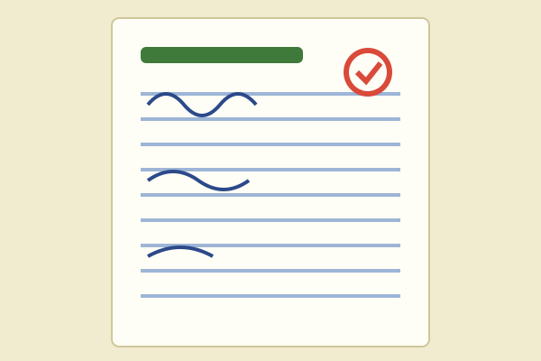

Paper #1
Topic: Functions and Function Operations
Brief description
Story of what happened to when functions was our topic
Reflection (100–200 words)
I thought my first solving on Calculus was so HARD, but after we took the first activity it was a lot lighter than we thought! We all thought that this subject was the end but after the first one, sir showed us there's light in darkness in CALCULUS.